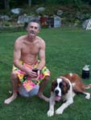

The Bloody Stump Glausta Hash
Run: #862 November 4, 2002
Hare: Async
Scribe: Basket the boomboom
Location: Durfee Hill Management Area, Glousta
Weather: Beautiful Late Fall Evening
Present: Bondo Jovi, WIPOS, Oozing SD, Summer’s Eve SYB, Basket Boom Boom, Slasher Dr.
WHO, Ben and Jake
Aaaahh, The RUN:
Wondering about the theme for tonight’s event, Eh? You might think it is because of the lame hare, lame hounds, or even a lame trail. You might be right, but then again…..
Starting from a dank and dirty
parking lot off Rte 44, outside of the Durfee Hill Management Area, the hounds
were chompin’ at the bit to get it on, but waited gallantly for the last hasher,
Basket, to arrive. The Hare didn’t have the same
excitement, looking a bit despairing and forlorn. He wasn’t in any hurry to
start, but politely explained about his bad back, with a compressed vertebra and
weakened ass backbone. He carried some flour in a sack, and was
explaining about the whole back thing, when Bondo Jovi
started complaining about twisting his ankle in an argument with his boss.
Inserted his foot into his mouth and damn near chewed it off, he did.
Oozing added his 2 and a half rupee about his “Dead
Man’s Ligament”, and the pain he’s experienced ever since the HolloWeenie Hash,
one week hence. Sounds like someone’s trying to get it back, I’d say.
Well, there we are, complaining like old men, when Summer’s Eve SYB starts talking about being on the rag, and breast pain and cramps. None of us could think of anything worse than that. It was like Quint and Hooper showing their scars. Remember Hooper speaking about his "broken heart" from a failed romance with Mary Ellen Moffett. Then it escalated from scratches to shark bites before Quint’s tale of injury as the most terrifying. He was scarred for life during the war, and it turned his existence into a personal vendetta against sharks.
A tattoo on his arm was removed - "U.S.S. Indianapolis" - but the internal scars remained.
In a long, memorable monologue, Quint tells how he was a sailor in World War II, his ship was sunk in twelve minutes by torpedoes from a Japanese submarine and about 1,100 men went into the water for about 4 days (and only 316 men survived) - about 800 sailors perished. As he remembers the grisly, hideous story of the fate of the shipwrecked USS Indianapolis' crew during the World War II-era, he recalls an attack of swarming sharks that began a half-hour later.
“Didn't see the first shark for about half an hour - a tiger - thirteen footer. You know how you know that when you're in the water, Chief? You tell by lookin' from the dorsal to the tail. What we didn't know was our bomb mission had been so secret, no distress signal had been sent. They didn't even list us overdue for a week. Very first light, Chief, sharks come cruising'. So we formed ourselves into tight groups...the idea was, the shark comes to the nearest man and he starts poundin' and hollerin' and screamin'. Sometimes the shark go away. Sometimes he wouldn't go away. Sometimes that shark, he looks right into ya, right into your eyes. Y'know, the thing about a shark, he's got lifeless eyes, black eyes, like a doll's eyes. When he comes after ya, he doesn't seem to be livin' until he bites ya, and those black eyes roll over white, and then - aww, then you hear that terrible high-pitch screamin', the ocean turns red, and in spite of all the poundin' and the hollerin', they all come in and rip ya to pieces...in that first dawn, we lost a hundred men. I don't know how many sharks, maybe a thousand. I don't know how many men. They averaged six an hour...Noon the fifth day, Mr. Hooper, a Lockheed Ventura saw us. He swung in low and he saw us...and he come in low and three hours later, a big fat PBY [seaplane] comes down and start to pick us up. You know, that was the time I was most frightened - waitin' for my turn. I'll never put on a life jacket again. So, eleven hundred men went in the water, three hundred and sixteen men come out, and the sharks took the rest, June the 29th, 1945. Anyway, we delivered the bomb.”
…but that was another story. This one is almost as sad. The pack finally made it’s way out of the lot and down the dirt road heading south. The Hare said there would be flour about 200 yards down, but it was much farther than that by the time we hit the first check.
Expecting it to veer off the main roadway, we checked high and low for another mark in the field adjoining the road. Finally, Summer’s Eve, bleeding badly by now and holding her breasts tightly, caught sight of some flour further up the road, and called us on. Another check was encountered quickly, and most of the pack followed Oozing and WHO into the woods.
Remembering Async’s last trail, he set many circle jerks off the main road to confuse the pack, I stayed straight on course to the next intersection, then ran left towards a lake. The pack was making their way through the brush, towards my location, so I checked straight on, going right then left, until the pack found trail again going in the opposite direction. As I was making my way back, I spied Bondo on all fours, trying to hide in the tall thin grass. He looked like one of the Fawangee’s, and thought he could hid that bulk of his in the grass. It was pitiful. Then I noticed Jake sneaking up behind him, and thought I should leave the two of them alone.
As I tried to catch the pack, I looked back and saw Bondo walking about, and I knew something was up. This was going to be the beer stop, and Async gave pity on the poor bastard, advising him to hold tight here. Now, he’d have to stand out in the cold night air, all by himself, until we made our way back for beer. I hesitated for a short while, thinking, why should I run ahead, when I could stay right here and have a beer, overlooking the lake, with the dogs, and Bondo. Then I remembered the opening scenes of Jaws, a pretty blonde girl skinny-dipping with a bunch of teenagers at a beach party one night.
She was Chrissie Watkins, who leaves the group sitting around a bonfire and runs toward the water, announcing that she is going swimming. Followed by a drunken male admirer, who is eager for an intimate swim, their run takes them along a run-down sand-dune fence - which in silhouette resembles skeletal bones or vertebrae - of a large fish. She strips off items of clothing one-by-one as she runs further down the beach before plunging in naked. Her silhouetted image splashes at the surface, first viewed from a distance far underwater and then from closer range. Her drunken teenage companion passes out on the shore. A metal buoy's bell on the surface of the water 'tings' at various intervals.
Suddenly, her nude body is pulled under and then dragged helplessly (pulled this way and then that way) on the surface by the unseen shark underneath, as she screams: "God help me!" For a brief moment, she is able to grab the buoy (sounding its death knell), but is then attacked and submerged for the last time in a horrifying sequence. The water surface is again still and quiet, but covered with blood, and my thoughts turn back to SESYB bleeding along the trail. If she can finish this ball buster, then I can too.
I started running to catch the pack. I was alone, but at least I wasn’t alone with Bondo. The first sign I saw of them was Async running backwards, resetting trail, by marking it back towards the ‘now confirmed’ Beer Stop. He advised me that the shorter route would be back with the cripples at the lake, but true trail would be found to the left 200 feet. Thoughts of Bondo flashed by me, and I ran to the left. Then flashlights shinning off the dark trees ahead, and the familiar, “On On!” was heard, as I joined the pack at the next check.
The Slasher Dr. WHO was running down Durfee Hill Road towards 44, and I shortcut through the woods in front of him. We continued running for a short while, until we both noticed we hadn’t seen any marks in some time. He turned around but I continued straight, thinking I could outwit the hare. (Having foreknowledge of the trails end, it doesn’t take much.) I ran almost to 44 before turning around to catch the fleeting hounds. By the time I got back to the check, they were long gone, but I could here them calling off in the woods, to the right, opposite the direction of the end. I though for a moment, that just maybe the hare set trail ahead, then re-crossed the road to Durfee Hill again. I ran almost to the strobe light atop the Fire Tower, before realizing that I’d be way out in no mans land, so once again I turned around. When I arrived at the check, I couldn’t hear anything, so I went right onto the north south trail.
I followed the re-marked trail back to the lake, where Bondo and Async were enjoying beers around a blazing fire. The brightness caused my night vision to fail and I walked deliberately into the lake. I thought the two of them would piss themselves at my misfortune. In a short while, Async was concerned that the main pack had not returned yet. They would have followed trail out to George Washington Lake Drive, then back to Rte 44, missing a check into George Washington Park, before going right on Durfee Hill Road and into the park just about the same location I had turned around a half hour before.
Eventually, they all made it in, with much joy and great jubilation. The WHO ripped some cloth off his shirt, and with a nearby branch, tightened a tourniquet around his bleeding stumps of legs. “Why”, he asks, “do the damn crippled hares set such long trails? First it was Tinker last week, with two artificial hips, and now Async this week, with his vertebrae. Don’t they know they need to slow down when they hurt? It’s enough to make a healthy young doctor wish he were old and decrepit like they are.”
After songs we sung, and long discussions of bleeding wenches and limbs, we finished our beers and made our way to B2. It was a simple jaunt along the main road, and into the woods, where the hare received Down-Downs along with most everyone else. Hashit was returned to SESYB for whining about the monthlies, then given to Bondo for the poorest of excuses for not running trail. Then it was back to the cars to change and off to Cady’s.
I was first to arrive and asked the barkeep for a few pitchers to start off with. A local couple beside me questioned my attire. Her response to the bartender was, “ I want whatever he’s had” and her boyfriend’s comment to me was “no wonder you go out alone.” The sad truth was found shortly when a half dozen similarly dressed came trouncing through the door.
Async ordered pizza, and with the beers in hand, we had a good night. As we started to leave, I happened to glance at the wooden barstool occupied by SESYB, and noticed the wood stained like a bloody stump. I guess Oozing will be handling things himself tonight, and thoughts of future hashes will fall 28 days from today. No wonder he’s so grumpy so often.
Then my mind goes back to the scene in Jaws, where Quint asks Hooper, “What do ya got here? A portable shower or a monkey cage?”
Hooper replies, “Anti-shark cage.”
Quint say’s, “Anti-shark cage. You go inside the cage? Cage goes in the water? You go in the water? Shark's in the water? Our bloody shark?
(singing as we left old Cady’s)
Farewell and adieu to you, Spanish ladies,
Farewell and adieu to you, ladies of Spain;
For we've received orders for to sail to old England;
But we hope in a short time to see you again.
0
We'll rant and we'll roar like true British sailors,
We'll rant and we'll roar across the salt seas,
Until we strike soundings in the channel of old England,
From Ushant to Scilly is thirty five leagues.
Then we hove our ship to with the wind at sou'west, boys,
We hove our ship to, for to strike soundings clear;
We got soundings in ninety-five fathom, and boldly
Up the channel of old England our course we did steer.
Now the first land we made it is called the Deadman,
Then, Ramshead off Plymouth, Start, Portland, and Wight;
We passed by Beechy, by Fairleigh and Dungeness,
And hove our ship to, off South Foreland Light.
Then a signal was made for the grand fleet to anchor,
All in the Downs, that night for to meet
Then stand by your stoppers, let go your shank-painters,
Haul all your clew garnets, stick out tacks and sheets.
Now let every man drink off his full bumper
Let every man toss off his full bowls;
We'll drink and be jolly, and drown melancholy,
So here's a good health to all true-hearted souls!
On On,

Basket Boom Boom